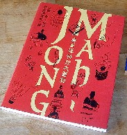
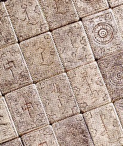

麻雀博物館の収蔵品写真集（竹書房'05.9.20刊・I
SBN4-8124-2365-1)
1999年４月、麻雀博物館がオープンしたとき、資料写真集として大図録が出版された。

それから６年、収蔵品も大幅に増えた。そこで構想も新たに出版された収蔵品の写真集である。新たな構想によるので、大図録の増訂版ではない。しかし以前からある貴重牌はもとより、新規収蔵品の数々が美しい図版で収録されていることに変わりはない。
大図録より装丁がしっかりしているし、函付きである。そこで価格も\5800-（税抜き）と、大図録（\3000-）にくらべ、ちょい高め。しかしそれだけの価値は充分以上。
σ(-_-)のイチ押しは清朝宮廷で使用されていたかも知れないという純銀牌。下の写真ではちと分かりにくいが、１索は鳥ではなく竜。竜といえば中国皇帝の象徴。いかにも清朝宮廷の高官が使用していたことを彷彿とさせる。
またこの牌の最大特徴は、花牌が漢字ではなく満州文字で刻印されていること。意味は春夏秋冬とか梅蘭菊竹ではなく、日昇月和（世界平和）・乾坤清寧（社会安寧）という。

清朝といえば、中国の北方、渤海湾に面したところの女真族（満州族）が起こした国。まさに清朝が満州族の支配国家であったことを証明している。その意味で、芸術性といい
歴史性といい、σ(-_-)の感覚では中国の国宝級。
他にも貴重牌は数々あるが、目を引くのは魚１索牌。ココでも書いたが、魚１索牌といえば、馬吊→麻雀の流れを検証する重要資料牌。１セット存在するだけでも重要だが、やはり１セットでは資料性が希薄である。同様の資料が複数存在することで、馬吊→麻雀の流れの証明がさらに確かなものになる。
その魚１索牌、以前は１セットであったが、新たに２セットが収蔵された。下記の牌は陶器製で、袁世凱愛用の牌という。
また下記は、インデックスがあるところから輸出用の牌と思われる。デザインも凝っており、非常にデキがいい。いや、さすがに麻雀博物館。ため息が出るばかり。
|